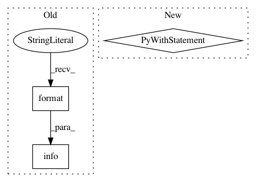

908c0c630a6c7c6e35b7bb0e172d41372bfb309d,python/ray/autoscaler/command_runner.py,SSHCommandRunner,run,#SSHCommandRunner#Any#Any#Any#Any#Any#Any#,291
Before Change
if not isinstance(port_forward, list):
port_forward = [port_forward]
for local, remote in port_forward:
logger.info(self.log_prefix + "Forwarding " +
"{} -> localhost:{}".format(local, remote))
ssh += ["-L", "{}:localhost:{}".format(remote, local)]
final_cmd = ssh + ssh_options.to_ssh_options_list(timeout=timeout) + [
"{}@{}".format(self.ssh_user, self.ssh_ip)
After Change
// todo: add a flag for this, we might
// wanna log commands with print sometimes
cli_logger.verbose("Running `{}`", cf.bold(cmd))
with cli_logger.indented():
cli_logger.very_verbose("Full command is `{}`",
cf.bold(" ".join(final_cmd)))
def start_process():
try:
if with_output:
return self.process_runner.check_output(final_cmd)
In pattern: SUPERPATTERN
Frequency: 3
Non-data size: 3
Instances
Project Name: ray-project/ray
Commit Name: 908c0c630a6c7c6e35b7bb0e172d41372bfb309d
Time: 2020-07-22
Author: maximsmol@gmail.com
File Name: python/ray/autoscaler/command_runner.py
Class Name: SSHCommandRunner
Method Name: run
Project Name: ray-project/ray
Commit Name: 40b8e35d61982b149e88fc09effd001879649bff
Time: 2020-08-11
Author: maximsmol@gmail.com
File Name: python/ray/resource_spec.py
Class Name: ResourceSpec
Method Name: resolve
Project Name: ray-project/ray
Commit Name: d434ba6518a83dfde682e52373b526df4c3933ec
Time: 2021-01-08
Author: ed.nmi.oakes@gmail.com
File Name: python/ray/serve/controller.py
Class Name: ServeController
Method Name: delete_endpoint